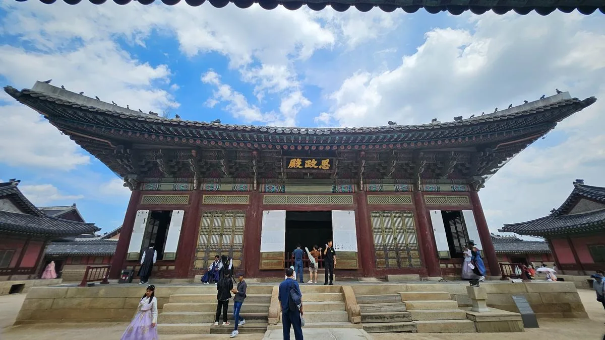
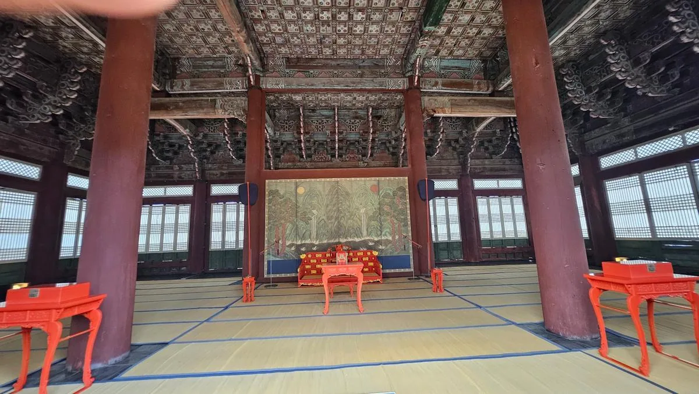
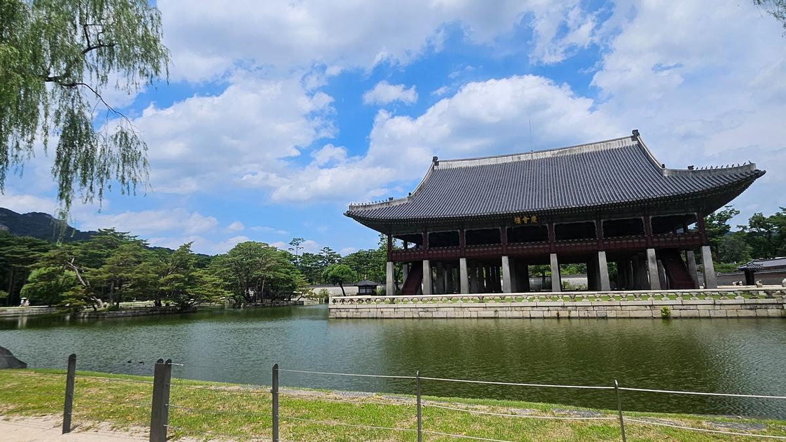
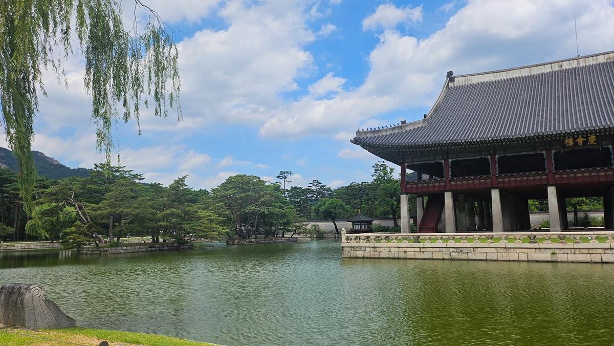

이번 단종 답사는 그래서 영월이 아니라 경복궁에서 시작한다. 비극의 결말을 먼저 보는 대신, 한 소년이 분명 왕이었던 자리에서 출발해 보려 한다.
왕좌에 앉았다고 왕인가
근정전 앞에 서면 먼저 건물의 크기가 들어온다. 넓은 조정과 품계석, 높은 월대, 그 위의 정전. 왕은 이 모든 질서의 중심에 서는 존재였다.
그러나 1452년 이 질서의 중심에 앉게 된 사람은 열두 살의 단종이었다. 그가 왕위를 원해서 얻은 것은 아니었다. 세자였고, 아버지 문종이 세상을 떠났고, 그래서 왕위를 이어받아야 했다. 준비할 시간도, 스스로 만든 정치적 기반도 없었다. 세종도 소헌왕후도, 어머니 현덕왕후도, 이제 아버지 문종도 없었다. 왕위는 물려받았다기보다 갑자기 떠맡겨진 자리에 가까웠다.
왕이 되기로 선택한 것이 아니었다.
세자였기 때문에 왕이 되어야 했다.
근정전에서 단종을 생각하면 ‘어린 왕’이라는 말이 단순히 나이를 뜻하지 않게 된다. 왕은 국가의 정점이었지만 어린 단종에게는 자신을 둘러싼 대신과 종친의 힘을 조정할 기반이 없었다. 더구나 대신들이 인사 후보에 황색 표시를 해 올리던 이른바 ‘황표정사’는 어린 왕 아래에서 실제 정치가 어떻게 움직였는지를 보여 주는 상징적인 장면이다. 단종은 계유정난 뒤에야 껍데기 왕이 된 것이 아니라, 즉위할 때부터 왕의 이름에 비해 왕의 힘이 약한 상태에서 출발했다.

사정전 — 왕이 정치를 해야 하는 자리
근정전이 왕의 권위를 보여 주는 공간이라면, 사정전은 왕이 신하들과 정사를 논하는 편전이다. 이곳에서는 질문이 조금 달라진다. ‘누가 왕인가’가 아니라 ‘누가 실제로 정치를 움직였는가’이다.
1453년 계유정난으로 김종서와 황보인 등 단종을 보좌하면서 동시에 어린 왕 아래에서 강한 권력을 행사하던 대신 세력이 제거되었다. 수양대군은 정권과 병권을 장악했다. 그러나 여기서 단종이 처음 무력해졌다고 보면 이야기가 너무 단순해진다. 계유정난은 힘 있는 왕을 껍데기로 만든 사건이라기보다, 이미 취약했던 왕에게서 마지막 보호막마저 걷어 낸 사건에 가까웠다.

왕의 이름과 왕의 힘은
계유정난 이전부터 이미 같지 않았다.
이 지점이 단종 이야기에서 중요하다. 1455년의 양위만 보면 어느 날 갑자기 왕위를 빼앗긴 것처럼 보인다. 그러나 단종에게는 처음부터 ‘왕이지만 스스로 정치를 움직이기 어려운’ 문제가 있었다. 김종서·황보인의 권력이 강하던 시기에도, 수양대군이 권력을 장악한 뒤에도 왕은 늘 다른 강한 세력 사이에 놓여 있었다. 1455년의 양위는 그 긴 무력함이 왕좌의 상실로 완성된 순간이었다.

경회루 — 화려한 궁궐, 짧았던 왕의 시간
경회루의 풍경은 근정전과 또 다르다. 물 위에 떠 있는 듯한 누각과 인왕산, 연못이 한 장면을 만든다. 왕실의 연회와 외교 행사가 열리던 공간답게 지금도 경복궁에서 가장 화려한 풍경 가운데 하나다.
그러나 단종의 시선으로 보면 이 평온한 풍경 뒤에 불안한 시간이 겹친다. 1452년 즉위, 1453년 계유정난, 1455년 양위. 왕으로 있었던 기간은 3년 남짓이었다. 궁궐은 그대로였지만 그 안에서 단종이 차지할 수 있는 정치적 공간은 점점 좁아졌다.

궁궐 밖으로 밀려나는 왕
1455년 단종은 수양대군에게 왕위를 넘겼다. 세조는 근정전에서 즉위했고, 단종은 상왕이 되어 수강궁으로 옮겨 갔다. 왕좌를 내놓았다고 해서 이야기가 끝난 것은 아니었다. 오히려 이때부터 단종을 둘러싼 사람들의 선택이 선명해진다.
어떤 사람들은 새 왕에게 협력했고, 어떤 사람들은 침묵했다. 그리고 어떤 사람들은 이미 왕위를 잃은 단종을 다시 왕으로 세우려 했다.
왕은 궁궐을 떠났지만,
‘누가 정당한 왕인가’라는 문제는 끝나지 않았다.
그래서 다음 답사지는 사육신묘다. 다만 그곳에서는 단순히 ‘충신들의 희생’을 기리는 데서 한 걸음 더 들어가 보고 싶다. 어린 단종이 실제 왕권을 행사하지 못하던 때에는 목숨을 걸지 않았던 사람들이, 왕위를 잃은 뒤에는 왜 목숨까지 던졌을까. 그들이 지키려 한 것은 한 소년 이홍위였을까, 아니면 적통의 왕이라는 질서였을까.
첫 번째 인사이트 — 적통
단종편을 따라가며 처음 선명해진 것은 ‘적통’의 힘이다. 단종은 준비가 되었기 때문에 왕이 된 것이 아니다. 세종의 적장자 문종의 아들이자 세자였기 때문에 왕이 되어야 했다. 개인의 준비보다 왕통의 질서가 먼저였다.
조선에서 왕은 개인이기 전에
왕통의 한 자리였다.
이 적통의 논리는 뒤에서 다시 나타난다. 사육신이 목숨을 걸고 복위를 도모하고, 241년 뒤 조선이 노산군을 다시 단종대왕으로 복위시키는 과정까지, 단종의 이야기는 결국 ‘누가 정당한 왕인가’라는 질문을 놓지 않는다.
1456년 성삼문·박팽년 등은 이미 상왕이 된 단종을 다시 왕위에 올리려 했다. 그 선택 때문에 그들은 당대에는 역적이 되었고, 훗날에는 충신이 되었다.
경복궁에서 ‘왕은 누구인가’를 물었다면, 사육신묘에서는 한 걸음 더 나아가 묻게 된다. 그들은 한 사람을 지키려 했던 것일까, 아니면 정통성을 지키려 했던 것일까.
조선 왕조 이야기 · 단종 편 — 답사의 길
- ①왕좌는 있었지만 — 경복궁 근정전
- ②왕의 힘이 사라지다 — 사정전·경회루
- ③왕을 되찾으려 한 사람들 — 사육신묘
- ④혼자 남은 왕비 — 정업원터·동망봉
- ⑤왕비가 돌아온 자리 — 사릉
- ⑥유배와 죽음의 땅 — 청령포·관풍헌
- ⑦죽은 왕의 무덤 — 장릉
- ⑧241년 만의 귀환 — 종묘 영녕전
참고 자료
한국민족문화대백과사전 「단종」 — 즉위, 계유정난 이후의 정국, 양위와 상왕 시기.
조선왕조실록 「단종실록」 해제 — 단종 재위 기간과 세조 즉위, 상왕 이거.
한국민족문화대백과사전 「단종복위운동」 — 1456년 명 사신 초대연의 장소가 창덕궁이었음을 확인.